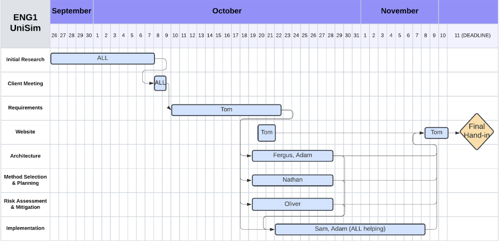

Documents -> Press to view PDF files:
ArchitectureGame -> Press to download file:
CodeVersion Control -> Press to view GitHub Repository:
RepositoryUniSim is a single player simulation game where players are tasked with building and managing a university campus. The goal of the game is to achieve maximum student satisfaction score by the end of the time. The player begins with an empty map and are offered options to construct several buildings which cannot be altered after. Once the game begins, the player must use their resources available to them wisely to achieve the best student satisfaction possible by striking a balance between different factors. These factors include but are not limited to: building types, building proximity to relevant facilities, building and infrastructure maintenance, links between campus areas, strategic placement of natural elements. The player is presented with special events that occur randomly. The events may be positive, negative or have no impact based on the players reaction (or non-reaction). The player must decide how to allocate and acquire resources during the game to achieve the best outcome. The game has a time limit of 5 minutes, then the game stops and the score is displayed as well as a complementary message reflecting performance. While the game cannot be “failed”, the message will indicate how well the player did. It is assumed that players will have basic familiarity with simulation games and how game interfaces work. A short tutorial or interface explanations should be provided highlighting certain aspects of the game in the beginning.
For our approach for this project we are planning on using the Waterfall approach, where our entire team will be focused on completing one task/deliverable before we move onto the next. There may be times where a previous deliverable needs to be altered slightly but ideally we will be completing each task one at a time.

We have allocated completing Requirements, Architecture, Method Selection & Planning and Risk Assessment 1 week each, leaving the remaining time to complete the code for a game. This schedule may change as with all 6 of us working on each deliverable we may complete them quicker than expected. This would leave us more time to complete the Implementation section at the end of the project.
EDIT: We have now changed our approach to an agile approach. This is due to us realising that it is more efficient to have people working on multiple deliverables parallel to each other rather than the whole team working on one at a time. This caused some confusion on writing within the documents. This will allow us to make changes to our planning/project depending on problems that may arise, rather than sticking to a rigid plan. The Agile Approach is known to work well with smaller development teams, so it should work well for our project.
For our approach for this project we are using the Agile approach. This will allow us to make changes to our planning project depending on the problems that may arise, rather than sticking to a rigid plan. The Agile approach is known to work ell with smaller devepoment teams, so it should work well for our project.

We have extended the time for Architecture, Method Selection & Planning and Risk Assessment & Mitigation to 08/11/2024 to allow for higher quality in documentation. This is also due to Sam and Adam being confident in the Implementation so that they would not require as much help from other members of the group.